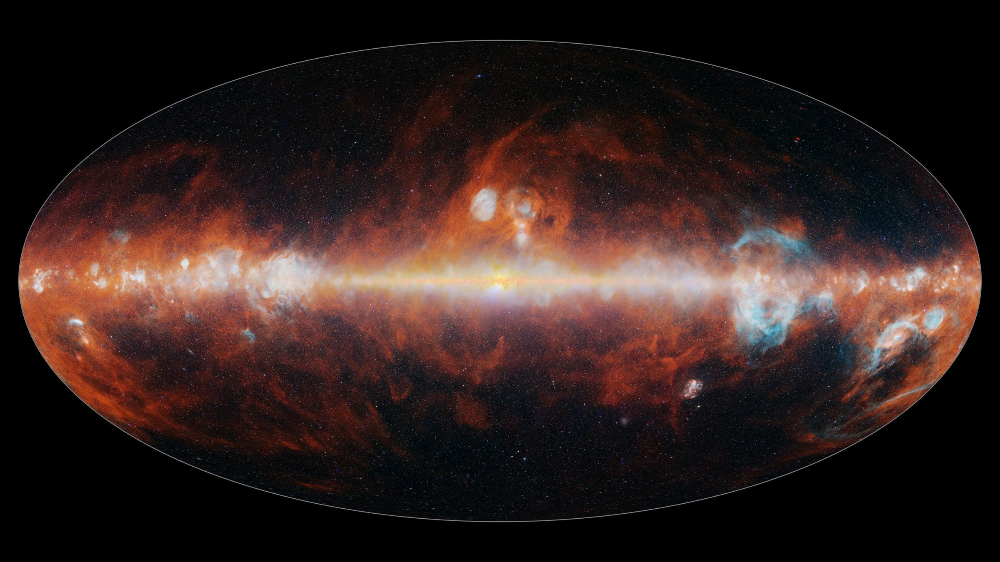
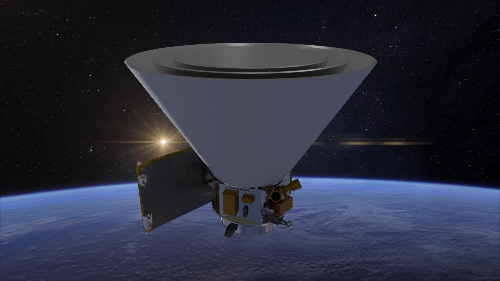

DISCOVER SPHEREx
Beyond what
our eyes can see.
Infrared light reveals a different view of stars, dust and galaxies. SPHEREx surveys the sky across 102 spectral channels, spanning roughly 0.75–5 micrometers.
Official first all-sky infrared composite · NASA/JPL-Caltech · Published December 2025. Spatial resolution heavily reduced for this full-sky presentation. This is a storytelling image, not an interactive all-sky dataset.
LIGHT AS INFORMATION
A color can
be a clue.
Wavelength describes a kind of light. Different wavelengths can emphasize different objects and materials. Scientists use this information to study the history of galaxies, water and organic molecules, and the early universe.
These questions motivate the mission. SKYSHIFT does not identify molecules or make discoveries automatically.
Read NASA’s mission overview ↗READ THE IMAGE CAREFULLY
A fair comparison
takes more than dates.
SPHEREx’s filter samples different wavelengths across an exposure. A pixel’s location affects what light it records. Two pictures taken on different dates can differ because of wavelength, image blur, background or instrumental artifacts.
SKYSHIFT checks spectral overlap and registration before offering a provisional comparison. A possible difference is a question for review, not proof of change.
Understand the checks ↗
THE OBSERVATORY
A mission.
A wider perspective.
SKYSHIFT uses calibrated observations distributed by NASA/IPAC IRSA. Our curated explorer shows individual detector cutouts, with quality masks and their spectral context preserved.
Spacecraft artist’s concept · NASA/JPL-Caltech. Illustration, not an astronomical measurement.
Start exploring ↗